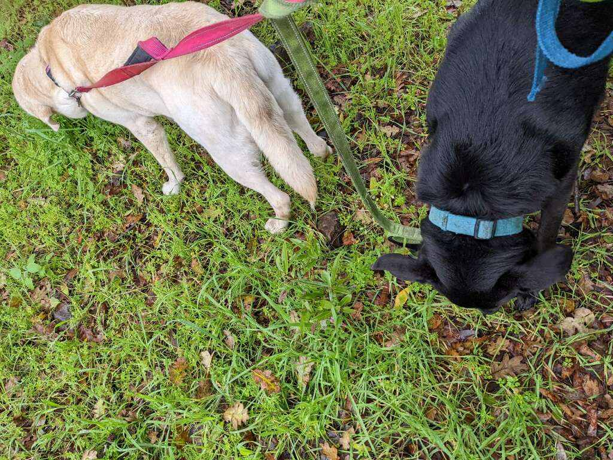

JAN 3, 2022
Such hard working pups.

Such hard working pups. Out here in the rains making sure the load bearing grass is still in good shape. Keeping landslides in check on square inch at a time. Unless they lied to me just so they could graze around nibbling on grass for an hour in the rain. But they'd never lie to me just so they could eat something. Never.
Adam: ☺️☺️